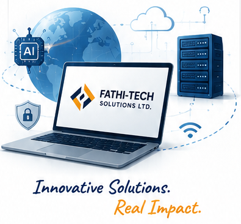

Digital skills & technical talent
Training and mentorship for fellows under the 3 Million Technical Talent programme.
YOUR PARTNER IN DIGITAL PROGRESS
Your ideas. Our expertise. We bring software, AI, infrastructure, and practical digital skills together to help your organisation do more.
Built around your business.
Designed for what comes next.
CONNECTED TECHNOLOGY. PRACTICAL IMPACT.

Supporting organisations
and the people behind them.
01 / WHAT WE DO
From everyday operations to emerging technologies and workforce skills, we bring the right expertise to your next challenge.
Have a challenge that spans more than one service?
Let’s find the right solution02 / SELECTED WORK & INITIATIVES
A look at the systems, digital experiences, and learning initiatives featured in our work.
Showing all 6 projects
More experience across business sectors
03 / ABOUT FATHI-TECH
Your organisation is unique.
Your technology should reflect that.
Fathi-Tech Solutions Limited (FATS) is a Nigerian ICT, digital innovation, and capacity development company. Our multidisciplinary team works across software, AI, data science, cybersecurity, infrastructure, and research to support organisations and communities.
Start with your people, your operations, and the challenge you want to solve.
Match the technology to your goals, with a clear scope, thoughtful design, and a practical way forward.
Bring implementation, training, and support together so your solution works in practice.
04 / SKILLS, INCLUSION & COMMUNITY
Beyond technology delivery, we contribute to digital skills, youth empowerment, and more inclusive access to technology.
Training and mentorship for fellows under the 3 Million Technical Talent programme.
Volunteer Hub participation, technical facilitation, and innovation mentorship.
Digital skills and emerging technology training supporting vocational education.
Participation through technology training, mentorship, and innovation support.
Capacity development in artificial intelligence, machine learning, and data science.
Support for data science ecosystem programmes, including initiatives supported by Google.
Our community work supports young people, women, students, and underserved communities through training, mentorship, and digital inclusion.
05 / MANAGEMENT & TECHNICAL EXPERTISE
Different specialisms. Shared purpose. Meet the people who connect technical knowledge with practical solutions.
Yes. Our services cover consultancy, software and mobile development, AI and data science, cybersecurity, infrastructure, procurement, research, and training. We can discuss which parts your project needs and agree on a suitable scope.
We develop web and mobile applications, including e-commerce, inventory management, point-of-sale, databases, Learning Management Systems, and Student Management Information Systems. Tell us about your workflow so we can explore the right solution.
Yes. Our digital presence services include website development, domain registration, hosting, and business email. We can discuss these as part of a new website or as individual services.
Use the enquiry form below or contact us by email or telephone. Share the service you need, your main requirements, and any target dates. We will use that information to discuss the scope and prepare a quotation.
LET’S BUILD WHAT’S NEXT
Have an idea, a challenge, or a project in mind?
Tell us a little about it. We’ll take it from there.
ABUJA OFFICE22 Lingu Crescent, Wuse II,
Abuja, Nigeria.
ADDITIONAL CONTACTS+234 909 622 7235
fathigalaxy@gmail.com
A few details will help us understand what you need.